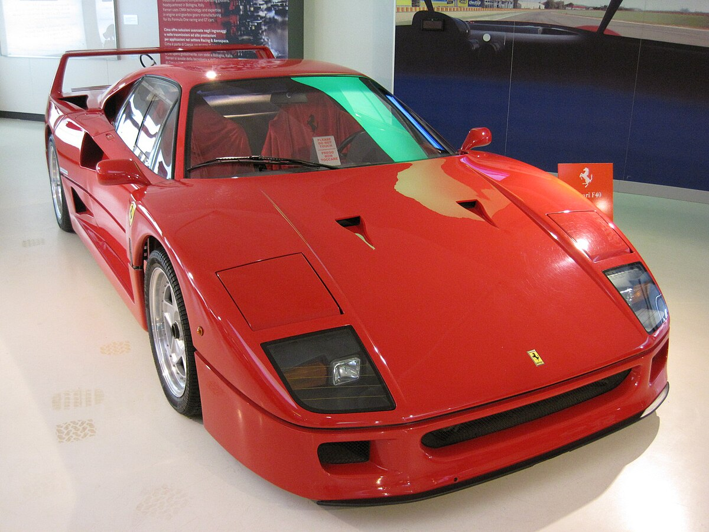
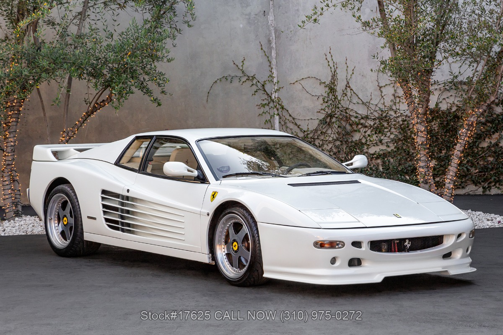
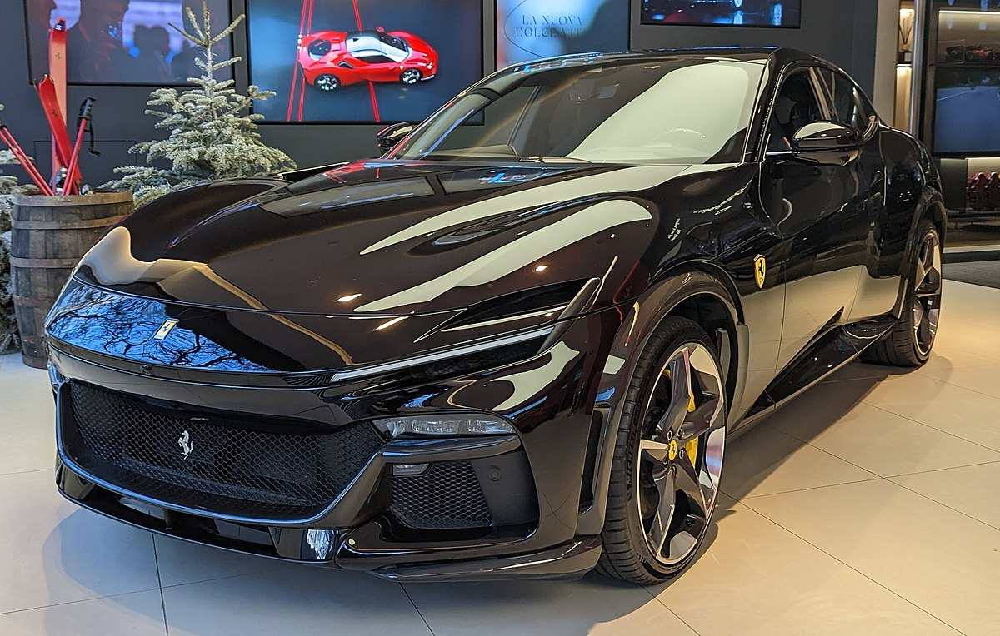

A Ferrari é uma fabricante italiana de carros esportivos de luxo com sede em Maranello. Fundada por Enzo Ferrari em 1939 na divisão de corridas da Alfa Romeo com o nome Auto Avio Costruzioni, a empresa construiu seu primeiro carro em 1940. No entanto, o início da empresa como fabricante de automóveis é geralmente reconhecido em 1947, quando o primeiro carro com o nome Ferrari foi concluído.
História
Ferrari e a sua participação no automobilismo:
Fórmula 1:
Endurance:
ferrari
Catálogo
Ferrari F40
A Ferrari F40 é um supercarro com motor V8 biturbo de 2.9L, que produz 478 cv e 58,8 kgfm de torque. Acelera de 0 a 100 km/h em cerca de 4 segundos e tem uma velocidade máxima acima de 320 km/h. A transmissão é manual de cinco marchas com tração traseira, e possui freios a disco ventilados nas quatro rodas.

Ferrari Enzo
A Ferrari Enzo foi um supercarro produzido entre 2002 e 2004, com a carroceria toda em fibra de carbono e inspirado na tecnologia da Fórmula 1. Seu motor V12 de 6.0 litros, naturalmente aspirado, entregava 660 cavalos, permitindo uma aceleração de 0 a 100 km/h em 3,65 segundos e alcançando mais de 350 km/h. Projetado por Ken Okuyama, apenas 400 unidades foram fabricadas, com a última sendo doada para caridade.
Ferrari Testarossa
A Ferrari Testarossa, lançada em 1984, é um ícone dos anos 80, com design de Pininfarina e as famosas aletas laterais para resfriamento. Equipada com um motor V12 de 4.9 litros e 390 cv, atingia cerca de 290 km/h. O nome "Testarossa" ("cabeça vermelha") faz referência às tampas dos cabeçotes vermelhas do motor. O modelo foi sucedido pelo 512 TR e 512 M, que trouxeram melhorias de desempenho.

Ferrari FxxK EVO
A Ferrari FXX-K Evo é um carro exclusivo para pistas de corrida, não homologado para as ruas. O modelo híbrido combina um motor V12 de 6.3 litros e um propulsor elétrico para entregar 1.050 cv de potência total. A versão Evo traz um avançado pacote aerodinâmico que aumenta a downforce em 23%, com uma asa traseira dupla. Isso o torna ainda mais leve e potente que o FXX-K original, para performance extrema nos circuitos.
Ferrari Puro Sangue
O Ferrari Purosangue é o primeiro SUV de quatro portas da marca, lançado em 2022. Equipado com um motor V12 de 6.5 litros e 725 cv, acelera de 0 a 100 km/h em 3,3 segundos, atingindo mais de 310 km/h. Com tração integral e suspensão ativa, combina performance e versatilidade, mantendo o DNA esportivo da Ferrari. O interior luxuoso oferece quatro lugares e portas com abertura "suicida" na parte traseira.

Ferrari La Ferrari
A LaFerrari, de 2013, foi o primeiro superesportivo híbrido da marca, combinando um motor V12 de 6.3 litros com um propulsor elétrico. O conjunto totaliza 963 cv, resultando em aceleração de 0 a 100 km/h em 3 segundos e velocidade máxima superior a 350 km/h. A produção foi limitada a 499 unidades, e o modelo sucedeu a Ferrari Enzo. O carro utiliza tecnologia inspirada na Fórmula 1, com sistema de recuperação de energia KERS e aerodinâmica ativa.
.jpg)